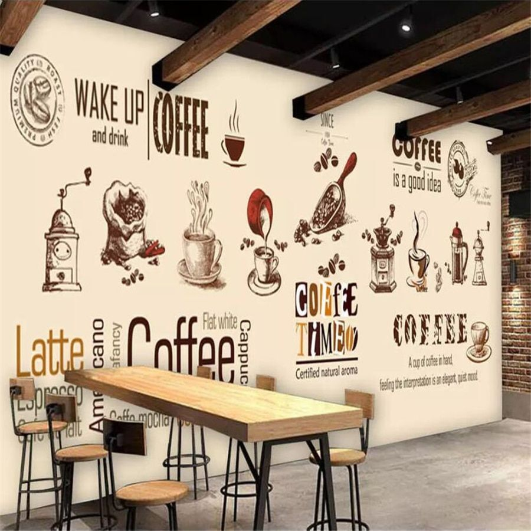

<ion-menu [content]="content" type="overlay">
  <ion-content style="background: rgb(35, 39, 83);">
    <ion-list style="text-align-last: center; margin: 50px 0 50px 0;">
        
      <br><br>
      <label style="font-size: x-large; margin:20px; color: #ffffff;">{{this.exchangeData.shopName}}</label>
    </ion-list>
    <ion-list>
      <button class="custommenubutton" menuClose ion-item *ngFor="let p of pages" (click)="openPage(p)">
        {{p.title}}<ion-icon name="arrow-dropright" style="font-size: x-large; float:right"></ion-icon>
      </button>
    </ion-list>
    
    <ion-item>
      <p>{{imageURI}}</p>
      <button ion-button color="secondary" (click)="getImage()">Get Image</button>
    </ion-item>
    <ion-item>
      <h4>Image Preview</h4>
      
    </ion-item>

  </ion-content>
  <ion-footer>
    <label style="color: #ffffff; margin:20px; vertical-align: super;">Version 0.0.1</label>
  </ion-footer>
</ion-menu>

<ion-nav [root]="rootPage" #content swipeBackEnabled="false"></ion-nav>